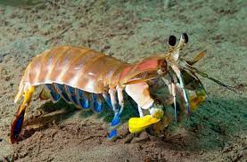
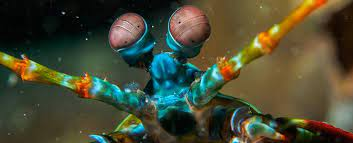

Informações Gerais
Stomatopoda (ou estomatópode), chamados popularmente de tamarutacas ou de lacraias-do-mar no Brasil,
é uma ordem de crustáceos marinhos da subclasse Hoplocarida,
que agrupa cerca de 400 espécies,
caracterizadas principalmente pela morfologia da segunda pata torácica, que é modificada em
apêndice subquelado, lembrando uma pata de louva-a-deus.
Seu nome científico é Odontodactylus scyllarus. 
Descrição
Os estomatópodes são predadores ativos que caçam presas com o auxílio de um sentido de visão muito
apurado e capaz de interpretar polarização no espectro ultravioleta e infravermelho).
Apresentam uma grande variação de tamanho, que pode ir de poucos milímetros até aproximadamente
40 cm nas espécies maiores.
Eles vivem em fundo consolidado, lodoso ou ainda arenoso,
onde cavam seus buracos ou aproveitam-se
dos orifícios deixados por outros animais para neles se instalar. São animais exclusivamente carnívoros,
alimentando-se de camarões, caranguejos, moluscos, peixes e até mesmo outros da mesma ordem.
O segundo par de patas, muito desenvolvido, é usado tanto para atacar a presa como para se defender.
O urópodo, quando aberto, também funciona para defesa, como um escudo, fechando a galeria em que o animal
esteja instalado. A fêmea desova no local onde se abriga e, em caso de perigo, enrola os ovos como uma bola,
prendendo-os junto ao corpo até encontrar um abrigo mais protegido.

São animais que apresentam comportamentos sociais muito variados, desde ameaças visuais contra predadores até comportamentos de côrte. De acordo com a anatomia da sua pata raptorial é possível distinguir entre dois grupos funcionais, as perfuradoras (spearers) ou as esmagadoras (smashers), sendo que cada um dos tipos apresenta sua própria variação comportamental e até mesmo de habitat.
As maiores esmagadoras, tais como exemplares de Odontodactylus scyllarus, são capazes de desferir um dos mais rápidos e violentos golpes do reino animal, um soco que pode apresentar a velocidade de um tiro calibre .22 (equivalente a 720 km/h) e uma pressão de impacto de 600 N/cm². Essa força esmagadora é a responsável pelo seu título de "lagosta-boxeadora" e é capaz de facilmente quebrar a carapaça de um caranguejo, as conchas duras e calcificadas de gastrópodes ou até mesmo quebrar o vidro reforçado de um aquário.
Visão
Esses animais possuem o mais complexo sistema de visão de cores do mundo animal, pois enxergam 12 cores primárias, correspondentes aos 12 pigmentos distintos presentes em sua retina. Nossos olhos possuem três tipos desses receptores - que correspondem à luz azul, verde e vermelha -, que nos permitem perceber o espectro de cores que vemos. O sistema de visão dos estomatópodes possui doze cones sensíveis à luz e outros quatro que filtram a luz (16 cones no total), o que lhes permite ver cores polarizadas e imagens multiespectrais. Como cada cone pode ver cerca de 100 cores, os estomatópodes são capazes de ver 1024 cores, ou seja, 1 septilhão de cores. Em comparação, o olho humano vê 106 cores, ou seja, 1 milhão de cores apenas. A visão dos estomatópodes é sensível à luz ultravioleta, mas ainda é desconhecido se ela pode distinguir a luz infravermelha.
Referências Bibliográficas